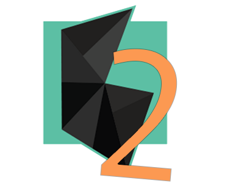

Gathyr2 infuses all of your events, contacts, and messaging. It is your one stop hub for all social media.
Gathyr2 infuses all of your events, contacts, and messaging. It is your one stop hub for all social media.
Gathyr2 is a social media collection app that combines posts from Facebook, Instagram, and Twitter on one website. You now have the ability to post to several social media sites without tapping from app to app.
The driven principle behind making Gathyr is to finally have the opportunity to capture an event, thought, or experience without having to go in and out of several apps at once. Gathyr your moments on multiple sites with a single touch.
- {{moment.story}}
- {{moment.message}}
{{tweet.user.screen_name}}
{{tweet.text.split(' https://t.co/')[0]}}